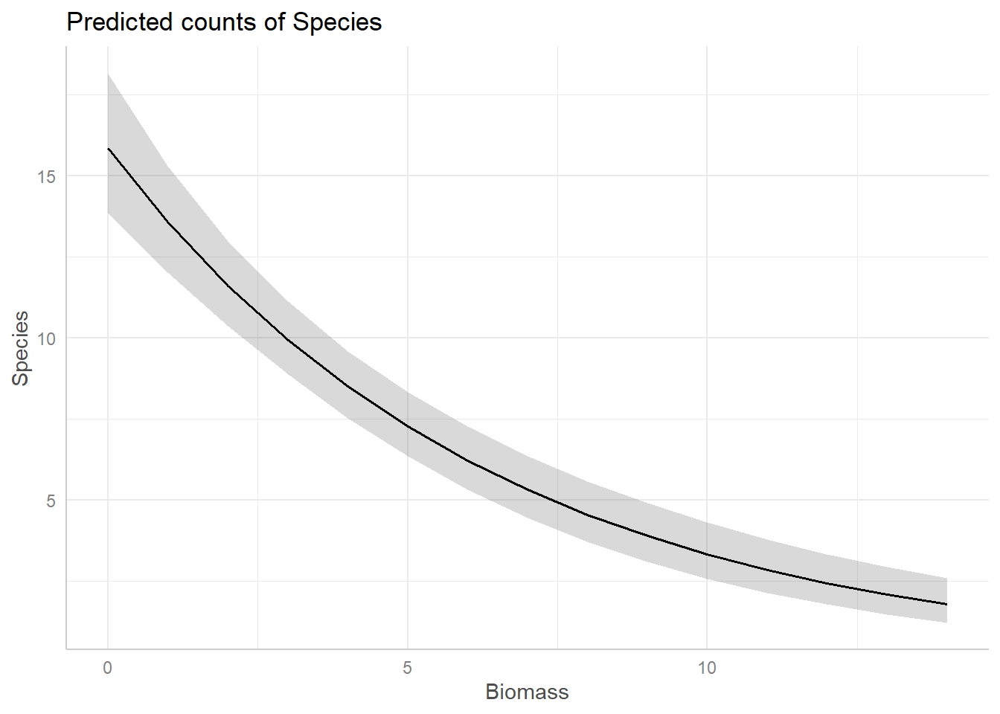

Day 1: Poisson GLMs
Exercise: Poisson GLM - predicting species richness
For the GLM exercises, we’ll use the workflow we suggested in the LM lectures, and expanded upon in the GLM introduction lecture, as a template, specifically:
Know your research question!
Think about your response variable (stochastic element).
Think about the process behind the data (deterministic element).
Understand the data that you’ve collected (plot it!)
Combine into a model that can answer your question.
Fit the model.
Check your assumption(s).
Repeat steps 6 and 7 as required.
Answer your question.
1. Know your research question!
The researchers who collected this data wanted to describe the
relationships between the number of species (Species)
present in a plot of land, and how this number was associated with the
overall plant biomass (Biomass, i.e. what was the overall
weight of plants in the plot of land), and the pH of the soil
(pH, categorised into “High”, “Medium” and “Low”). The
researchers were interested in describing the associations between
species and the two explanatory variables. In total, the researchers
collected data from 90 plots of land (\(n =
90\)), where each observation is from a single plot.
2. Think about your response variable (the stochastic element).
From the information provided in the brief above, we are already able
to determine a suitable distribution to use when fitting the model (the
fact that this practical is called Poisson GLM may also offer a rather
cryptic hint…). The relevant information comes from the description of
Species indicating that this variable is a count, which
implies 1) the minimum value is 0 [we cannot have -1 species], and 2)
the response variable will be measured in integers [we cannot count 3.14
plants]. With this information alone, we can already deduce the
stochastic element of our model (i.e. the error) should be
adequately described by specifying a \(Poisson\) distribution.
Therefore, the stochastic element of our model will be:
\(y_i \sim Poisson(\lambda_i)\)
Where \(y\) is the count of species in a plot \(i\), generated according to a \(Poisson\) distribution with rate \(\lambda\).
3. Think about the process behind the data (the deterministic element).
Spare a moment’s thought to how complex the process behind the number of plant species present in a plot of land will be. How much sunlight does each plot get? How much rainfall? What seeds were already present in the soil before data collection started? Why were those seeds present and not others? Why did some of them germinate in time for us to count them?
We don’t have any data to try and explain this variation, yet it will still be there (this is what we are tasking the stochastic part of the model to deal with).
For our purposes, the deterministic part we’re interested in is what role plant biomass and soil pH plays in determining species richness. With this in mind, the deterministic element of our model will be:
\(log(\lambda_i) = \beta_0 + \beta_1 \times Biomass_i + \beta_2 \times midpH_i + \beta_3 \times highpH_i\)
Where \(\lambda\) is our linear predictor regressed on the \(log\) link scale, where \(\beta_0\) is the intercept (which defaults to low pH), \(\beta_1\) is the slope for biomass, \(\beta_2\) is the difference from low pH (\(\beta_0\)) to mid pH, and \(\beta_3\) is the difference from low pH to high pH.
Remember that for categorical variables, R will convert
these into a series of columns with 1 indicating an observation belongs
to a group and 0 indicating the converse. One of the groups will not
have a column (the group that has the lowest alphanumerical value,
e.g. for a categorical variable with groups A and
B, A would be first), and it is this group
that becomes the intercept (\(\beta_0\)). We are able to specify which
group becomes our reference and we’ll do this later on, such that
low is our reference point.
4. Understand the data that you’ve collected (plot it!)
We now get to the part where we’ll actually start using
R. A plea though - do not underestimate the value in taking
the time to think carefully about the previous steps. Spending the time
thinking about those questions makes your life that much easier. I’d
estimate that for my own work, I spend at least 60% of my time thinking
before doing anything with data or R. It really is that
important.
4.1. Get R ready to go
As in previous exercises, either create a new R script (perhaps call
it GLM_Poisson) or continue with your previous R script in your RStudio
Project. Again, make sure you include any metadata you feel is
appropriate (title, description of task, date of creation etc) and don’t
forget to comment out your metadata with a # at the
beginning of the line.
4.2. Data exploration
Import the data file ‘species.txt’ into R and take a look at the
structure of this dataframe. Given you have never seen this data before,
it’s really important that you familiarise yourself with any nuances. To
help with this, carry out an initial data exploration (using any methods
you think will help you get a sense of the data,
e.g. plot(), pairs(), coplot(),
amongst many other options).
While doing this, ask yourself:
- Do any of the variables need to be adjusted? (e.g. are factors recognised as such?)
- Do any factors need to be “re-levelled”, such that it is read “Low”,
“Medium”High” (or any order we may prefer)?
- Hint: check
?factorand look at thelevelsargument - Hint: it might make sense for
lowpH to be our reference level
- Hint: check
- Are there any relationships you can already see by eye alone?
- Are there any imbalances in any of the explanatory variables?
- Are there any observations that seem like they may be a data entry mistake?
If using pairs() to create a plot of the variables of
interest, rather than creating a plot with every single variable in our
dataset, we may prefer to restrict the plot to the variables we are
actually interested in (this is redundant for this dataset but it’s
worth keeping this trick in mind for larger datasets). An effective way
of doing this is to store the names of the variables of interest in a
vector VOI<- c("Var1", "Var2", ...) and then use the
list of variable names to subset the variables that get plotted
(e.g. pairs(Mydata[, VOI]))
sp <- read.table(file= "./data/species.txt", header= TRUE)
# Check the structure of the data to see if we need to correct anything
str(sp)
## 'data.frame': 90 obs. of 3 variables:
## $ Species: int 9 10 15 9 7 8 7 6 13 14 ...
## $ Biomass: num 2.2 1.6 1 1.4 4.9 3.9 3.9 6.5 0.3 1.9 ...
## $ pH : chr "low" "low" "low" "low" ...
# Correct pH so it is read as a factor, reordered such that "low" is the reference level
sp$pH<- factor(sp$pH, levels = c("low", "mid", "high"))
# Get simple descriptives of the data (e.g. what is the range for each variable?)
summary(sp)
## Species Biomass pH
## Min. : 2.00 Min. : 0.300 low :30
## 1st Qu.:12.00 1st Qu.: 1.300 mid :30
## Median :18.50 Median : 2.000 high:30
## Mean :22.34 Mean : 2.684
## 3rd Qu.:33.00 3rd Qu.: 3.275
## Max. :52.00 Max. :13.600
# make a list of the variables of interest, for convenience:
VOI<- c("Species", "Biomass", "pH")
pairs(sp[, VOI])# Negative relationship between Species and Biomass?
# Positive relationship between Species and pH?
# Biomass tends to increase with pH, which could generate
# some collinearity between these explanatory variables in a model.
# but still plenty of variation in Biomass within each pH,
# so hopefully this won't be an issue.
coplot(Species ~ Biomass | pH, data = sp)
5. Combine into a model that can answer your question.
Having gone through the previous steps, it’s now time to run our first model. Given this is the first practical session, we’ll start with a simple model for the sake of pedagogy, where we explore how species richness is related with biomass.
Write the equation (not the R code) for this simplified
model.
Hint: You can always use the more complex model, written in steps 2 and 3, and simplify it to match the first model we’ll run.
6. Fit the model.
To warm up, let’s start by using this simpler model, where we assume
that the number Species counted in a plot is a function of
how much Biomass there was. We’ll leave pH out
of the model for the time being.
Run the model now, using glm().
- Hints:
- We use
family =to specify the distribution in aglm()- “Family” is just an alternative way to refer to a distribution.
- What is the default link function used by Poisson GLMs?
- How do we specify it?
- Do we need to specify it?
- Use
?glmif you’re stuck, or ask for help.
- We use
7. Check your assumption(s).
Having run the model, we now need to check how well this model meets the assumptions.
To do so, we can check the model diagnostic plots, as well as check for dispersion. Do so now.
For the diagnostic plots:
- Residuals vs Fitted
- What kind of pattern would we expect?
- Q-Q Residuals
- Are we expecting Normally distribted error with a Poisson distribution?
- Scale-Location
- What kind of pattern would we expect?
- Residuals vs Leverage
- Are any observations having a strong influence on the model fit?
# Model diagnostic plots:
# Residuals vs Fitted
# We see a fairly clear "funnel" pattern. We go from having relatively "little" variation
# when our predicted values (on the link scale) are small, to "lots" of variation
# when our predicted values are large, and most of this is happening between predicted
# values of 2.5 to 3.5 (so over a fairly small range of predicted values)
# This would suggest we're not meeting the assumptions particularly well and
# is a good indication that we have overdispersion.
# Q-Q Residuals
# We completely ignore this figure for GLMs.
# Scale-Location
# We also don't want to see any patterns (as for Resids vs Fitted) but we see the
# same rapid increase in variation once predicted values are above 2.5
# Residuals vs Leverage
# We're really only using this to check for values close to a Cook's distance of 1
# While we don't have any observations that are greater than 1, we have a handful
# that are getting uncomfortably close. While these values are fine, we're
# not exactly jumping for joy with these Cook's distances.
# Overall, the diagnostic plots don't look great. Not the worst, but we'd want something
# better.
# To do a quick and crude check for dispersion, we can use the information from summary()
# We take residual deviance and divide by the degrees of freedom, so for this model:
# 432.63/88 = 4.9!
# We have a whopping 4.9 overdispersion! My general rule of thumb is that I start getting
# concerned when dispersion is somewhere in the 1.5-1.8 region. 4.9 is doomsday!
# As a result, our standard error for our parameter estimates is going to be artificially
# small. This in turn leads to both 1) risks of our p value being smaller than it should be
# for Biomass, and 2) any predictions that include uncertainty being too confident.
par(mfrow = c(2,2)) # Show figures in 2 rows and 2 columns
plot(sp.glm1) # Plot the model diagnostics
par(mfrow = c(1,1)) # Reset so only 1 figure is shown
summary(sp.glm1) # Get the summary of the model (to check dispersion)
##
## Call:
## glm(formula = Species ~ Biomass, family = poisson(link = "log"),
## data = sp)
##
## Coefficients:
## Estimate Std. Error z value Pr(>|z|)
## (Intercept) 3.55455 0.03939 90.25 <2e-16 ***
## Biomass -0.19534 0.01604 -12.18 <2e-16 ***
## ---
## Signif. codes: 0 '***' 0.001 '**' 0.01 '*' 0.05 '.' 0.1 ' ' 1
##
## (Dispersion parameter for poisson family taken to be 1)
##
## Null deviance: 645.45 on 89 degrees of freedom
## Residual deviance: 433.62 on 88 degrees of freedom
## AIC: 866.48
##
## Number of Fisher Scoring iterations: 4
8. Answer your question
Hopefully you identified issues that mean we should be very cautious with interpreting this model. For now, we’ll put these concerns to rest (we will come back to them), and use this model as an opportunity to practice making predictions (and therefore answering our research question).
8.1. Go back to your equation that you wrote for question 5. We’re
going to combine the information from summary() with the
equation we wrote in section 5 to allow us to make predictions. As a
reminder, the statistical notation for the deterministic element of the
model with just Biomass is:
\(log(\lambda_i) = \beta_0 + \beta_1 \times Biomass_i\)
where \(\beta_0\) was the intercept and \(\beta_1\) was the slope for biomass.
Replace \(\beta_0\) and \(\beta_1\) now, using your parameter
estimates from summary(), and use this updated equation to
make the following predictions:
On the link scale, how many plants would you predict if a plot had 0 kg of biomass?
On the link scale, how many plants would you predict if a plot had 2.5 kg of biomass?
On the link scale, how many plants would you predict if a plot had 5 kg of biomass?
# On the link scale, how many plants would you predict if a plot had 0 kg of biomass?
3.5545494 + -0.1953352 * 0 # = 3.554549
## [1] 3.554549
# On the link scale, how many plants would you predict if a plot had 2.5 kg of biomass?
3.5545494 + -0.1953352 * 2.5 # = 3.066211
## [1] 3.066211
# On the link scale, how many plants would you predict if a plot had 5 kg of biomass?
3.5545494 + -0.1953352 * 5 # = 2.577873
## [1] 2.5778738.2. To make interpreting these predictions easier and more
intuitive, let’s make the predictions on the response scale. To go from
the \(log\) link scale, to the response
scale, we take our predictions and apply the inverse link function to
them. The inverse link function of \(log\) is \(e\) (or exponential, or
exp()). Predict, on the response scale, how many plant
species we would expect if:
On the response scale, how many plants would you predict if a plot had 0 kg of biomass?
On the response scale, how many plants would you predict if a plot had 5 kg of biomass?
On the response scale, how many plants would you predict if a plot had 10 kg of biomass?
# On the response scale, how many plants would you predict if a plot had 0 kg of biomass?
exp(3.5545494 + -0.1953352 * 0) # = 35.0
## [1] 34.97206
# On the response scale, how many plants would you predict if a plot had 5 kg of biomass?
exp(3.5545494 + -0.1953352 * 5) # = 13.2
## [1] 13.1691
# On the response scale, how many plants would you predict if a plot had 10 kg of biomass?
exp(3.5545494 + -0.1953352 * 10) # = 5.0
## [1] 4.9589678.3. Using this approach, we get a series of snapshot predictions over different values of Biomass. That’s useful in and of itself, but we can make this a bit easier for readers to interpret by showing this in a figure.
To do so, rather copy-and-pasting our equation and substituting in
different value of biomass, why not use R to make this a
bit easier for us?
Let’s start by creating an entirely new dataset that contains a
column called Biomass. If we wanted to, we could just plug
our previous biomass values in but an alternative that gives us more
flexibility would be to use the seq() function to create
any number of Biomass values we desired. All we need to
supply is the minimum and maximum values that we want to consider, and
how many values we want returned to us.
The other thing we need to do is to put this into a dataframe. The
function data.frame() makes this trivially easy. All we
need to do is say what the column is going to be called (here
Biomass) and what the values for the column are. The
seq() function can handle what the values are, so
specifying the column name is all we need to do - and it’s dead easy.
The example below shows all of this done in a single line of
R code.
new_richness <- data.frame(Biomass = seq(from = min(sp$Biomass),
to = max(sp$Biomass),
length.out = 5))Use this now to create your own “synthetic” data set to do predictions with.
new_richness <- data.frame(Biomass = seq(from = min(sp$Biomass),
to = max(sp$Biomass),
length.out = 5))
new_richness
## Biomass
## 1 0.300
## 2 3.625
## 3 6.950
## 4 10.275
## 5 13.6008.4. Once you have this data frame, use it to make 5 simultaneous
predictions of how many plant species we would expect to find, on the
response scale. Store the output in a new column of the
new_richness dataset.
new_richness$pred <- exp(3.5545494 + -0.1953352 * new_richness$Biomass)
new_richness
## Biomass pred
## 1 0.300 32.981567
## 2 3.625 17.226679
## 3 6.950 8.997707
## 4 10.275 4.699613
## 5 13.600 2.454666An option available to use is, rather than doing this predictions by
“hand”, we can use a function called predict(). This
function becomes especially useful when we have more complicated models,
where we really don’t want to have to write out the equation by hand,
but also for when we want to make more customised figures. We’ll use
predict() more tomorrow, but for now, let’s use it in this
relatively simple example.
We just need to supply predict() with our new
“synthetic” dataset (i.e. new_richness from above) along
with our model object (e.g. sp.glm1). The code to do so is
then:
pred_plants <- exp(predict(sp.glm1, new_biomass))8.5. With both this new dataset, create a plot to show our prediction.
For this, you can either use your “hand made” predictions, or the
predictions using predict().

And with that, we have a prediction (from our model which we know has issues). If we stopped here, we’d conclude that biomass has a negative association with the number of plant species, while also reporting that this model has a variety of issues.
8.6. (Optional): The figure we have produced looks pretty jagged. If we wanted a smoother line to be drawn, how would we do so?
# We would simply increase the number of biomass values that our seq() code created. Try it out if you're interested.
9. Including pH in the model
We’ve run a Poisson GLM where Species is explained by
Biomass, but there are two problems. The first is that our
model diagnostics suggested we are not meating our assumptions well. The
second is that our initial research question sought to describe the
relationships between Species with both
Biomass and pH. We might be able to
address both issues with the appropriate model.
Run a \(Poisson\) GLM where
Species is a function of Biomass and
pH.
10. Re-diagnose
With every new model we run, we need to diagnose that model. We’ve already done that once, so let’s quickly do it again.
For the diagnostic plots:
- Residuals vs Fitted
- What kind of pattern would we expect?
- Q-Q Residuals
- Are we expecting Normally distributed error with a Poisson distribution?
- Scale-Location
- What kind of pattern would we expect?
- What is the maximum \(\sqrt{|Std. PearsonResid|}\) we would be comfortable with?
- Residuals vs Leverage
- Are any observations having a strong influence on the model fit?
# Model diagnostic plots:
# Residuals versus Fitted
# While we do still see a little bit of a funnel, it's a big improvement compared
# to previous model. This plot for the new model, while not perfect, is pretty good
# Q-Q Residuals
# We completely ignore this figure (despite it looking nice in this model)
# Scale-Location
# We also don't want to see any patterns. There's maybe a touch of increasing
# error as our predictor gets larger, but not enough to concern me
# Residuals vs Leverage
# We're really only using this to check for values close to a Cook's distance of 1
# We can't even see the dashed lines showing a Cook's distance of 0.5, so we're
# golden here too
# Overall, the diagnostic plots look great
# To do a quick and crude check for dispersion, we can use the information from summary()
# We take residual deviance and divide by the degrees of freedom, so for this model:
# 77.128/86 = 0.9
# Not exactly the ideal value of 1 but 0.9 is nothing to get concerned about
# Also, remember that *underdispersion* is generally not much of an issue
# Compared to the first model, this is a fantastic improvement
par(mfrow = c(2,2))
plot(sp.glm2)
par(mfrow = c(1,1))
summary(sp.glm2)
##
## Call:
## glm(formula = Species ~ Biomass + pH, family = poisson(link = "log"),
## data = sp)
##
## Coefficients:
## Estimate Std. Error z value Pr(>|z|)
## (Intercept) 2.76324 0.06892 40.096 <2e-16 ***
## Biomass -0.15579 0.01567 -9.945 <2e-16 ***
## pHmid 0.65276 0.06965 9.371 <2e-16 ***
## pHhigh 1.12615 0.06516 17.283 <2e-16 ***
## ---
## Signif. codes: 0 '***' 0.001 '**' 0.01 '*' 0.05 '.' 0.1 ' ' 1
##
## (Dispersion parameter for poisson family taken to be 1)
##
## Null deviance: 645.453 on 89 degrees of freedom
## Residual deviance: 77.682 on 86 degrees of freedom
## AIC: 514.54
##
## Number of Fisher Scoring iterations: 4
11. Model interpretation
Now that we’ve fit a model that answers our question and checked that we are meeting the assumptions reasonably well, let’s begin the process of interpreting what the results mean. For starters, given this is a more complex model, let’s take it slowly and make sure we understand what each parameter estimate means.
Using summary(), identify what each parameter means.
# "(Intercept)" is the predicted value on the link (log) scale when
# pH is "low". A hint is that there is no labelled coefficient called
# "pHlow".
# "Biomass" is the slope of Biomass.
# It is negative, so assumes a linear decrease (on the log scale)
# For every extra 1 unit (here kg) of biomass "added" to a plot
# the number of species (on the log scale) decreases by -0.16
# "pHmid" is the estimated difference (on the log scale) between
# the "pHmid" and the reference level, "pHlow".
# A value of 0.65 means plots with "mid" pH have 0.65 (on link scale)
# more species than "low" (our intercept).
# "pHhigh" is the estimated difference (on the log scale) between
# the "pHhigh" and the reference level, "pHlow".
# A value of 1.13 means plots with "mid" pH have 1.13 (on link scale)
# more species than "low" (our intercept).
# A mathematical description of the model
# (and how I would present it in the methods section of a paper):
# Species_i ~ Poisson(lambda_i)
# log(lambda_i) = 2.76 + -0.16 * Biomass_i
# + 0.65 * pHmid_i + 1.13 * pHhigh_i
summary(sp.glm2)
##
## Call:
## glm(formula = Species ~ Biomass + pH, family = poisson(link = "log"),
## data = sp)
##
## Coefficients:
## Estimate Std. Error z value Pr(>|z|)
## (Intercept) 2.76324 0.06892 40.096 <2e-16 ***
## Biomass -0.15579 0.01567 -9.945 <2e-16 ***
## pHmid 0.65276 0.06965 9.371 <2e-16 ***
## pHhigh 1.12615 0.06516 17.283 <2e-16 ***
## ---
## Signif. codes: 0 '***' 0.001 '**' 0.01 '*' 0.05 '.' 0.1 ' ' 1
##
## (Dispersion parameter for poisson family taken to be 1)
##
## Null deviance: 645.453 on 89 degrees of freedom
## Residual deviance: 77.682 on 86 degrees of freedom
## AIC: 514.54
##
## Number of Fisher Scoring iterations: 4
12. Create full predictions and a figure to visualise your relationship
To visualise the relationship, we could use the same technique that
we used for the model with just biomass and extend it to include the
differing levels of pH. To do so, however, requires a few steps that we
cover in more detail in the \(Binomial\) GLM exercise tomorrow. For
today, what we can do is make use of some R packages that
make visualising our predictions easy.
While using these packages has the benefit of making our lives simpler but there are costs associated with using them. The first, and more important for this stage of your learning, is that it obscures and mystifies how these predictions are actually made. The second and more important, for when you get to making publication quality figures, is that these packages lock you into someone else’s aesthetic choices. Sometimes, these choices are OK, but for myself I definitely prefer to make figures the way I like them. Regardless, these packages are useful, and especially early on in analysis I will often use them to get a sense of what the predictions look like, before then remaking them according to my own tastes.
For this part of the exercise, we’ll use the ggeffects
R packages to create the predictions and associated
figures, but be aware there are alternative options that you may
prefer.
To start, we need to install the ggeffects package, and
then load it. The code to do so is:
install.packages("ggeffects")
library(ggeffects)From there, it’s a relatively easy process to get the figures we
want. The core function we use is called ggpredict(), for
which we need to supply the model name, and then the explanatory
variable we want to create the prediction for, and then plot it.
Note that there are two nice thing that ggeffects does
automatically that makes life a little easier. The first is that the
package will backtransform our linear prediction (\(\lambda\)) to the response scale, meaning
the figures are easier to interpret! The second is that it calculates
and adds in 95% confidence intervals automatically, too. We’ll cover how
to get 95% confidence intervals in the next lecture, but for now just
appreciate that it’s being handled for you by
ggeffects.
For example, assume we want a figure that shows the predicted relationship between Species Richness and Biomass (similar to the one we may by hand above), on the response scale, the corresponding code would be:
bio_pred <- ggpredict(sp.glm2, terms = "Biomass")
plot(bio_pred)Use ggeffects now to create a figure to show the
predicted relationships for both covariates in our model.

And just like that, we have figures that can show our predicted relationships from our model.
Summary
At this point, we’re pretty much done. We started off with a simple model which we used diagnostic plots to determine that that version of the model had various issues. We resolved those issues by adding in an additional explanatory variable (but note this will not always work, and there are risks associated with adding variables to a model, see the Bernoulli lecture). We then interpreted our results and used these to create predictions to make our results more intuitive. All that remains is to write up the pre-print, paper, report, blog post, whatever, to share our findings with a broader audience.
13. (Optional) Exploring model diagnostics
One of the most challenging aspects in learning GLMs is determining if there is a problem in model diagnostics. Overwhelmingly, this is because a lot identifying issues relies on gaining enough experience to know when there is a problem or not. To that end, as an optional exercise, we include code to simulate a \(Poisson\) dataset, run a \(Poisson\) GLM, and perform model diagnostics with the aim of giving you a flexible means to gain some experience. The benefit of having you simulate datasets is that you know what the Truth is - because you decide what it is. With that anchor in place, you can then: run a model with far too few samples; Or a model that does not include the appropriate covariates; or both; or neither; all with the aim of exploring what the consequences are on the model diagnostic plots.
In general, simulating datasets and using these simulated datasets to test your statistical models is an excellent approach and one that is well worth building into your data analysis workflow (ideally before ever collecting real data).
The code to do the simulation can be found below, but is generated (often called the Data Generating Process, or DGP, in both code or real data sets) as:
\(y_i \sim Poisson(\lambda_i)\)
\(log(\lambda_i) = \beta_0 + \beta_1 \times x_{1,i} + \beta_2 \times x_{2,i} + \beta_3\times x_{3,i}\)
where you are free to decide what the values for the parameters (\(\beta_{0,...,3}\)) are.
Rerun the simulation and analysis varying the sample size
(e.g. N <- 1000), the effect sizes
(e.g. beta_0 <- 10) or the formula of the
glm() (e.g. y ~ x1). Check what effect this
has on dispersion and the model diagnostic plots.
# Set your seed to have the randomness be cosnsitent each time you run the code
# You can change this, or comment it out, if you want to embrase the randomness
set.seed(1234)
# Set your sample size
N <- 500
# Create three continuous covariates
x1 <- runif(N, 0, 10)
x2 <- runif(N, 0, 10)
x3 <- runif(N, 0, 10)
# Set your parameter values
beta_0 <- 2.5 # This is the intercept (on link scale)
beta_1 <- 0.2 # This is the slope for the x1 variable (on link scale)
beta_2 <- -1.3 # This is the slope for the x2 variable (on link scale)
beta_3 <- 0.4 # This is the slope for the x3 variable (on link scale)
# Generate your linear predictor on the link scale (i.e. log)
# We don't actually need to use log() here (it's already on the link scale)
linear_predictor_link <- beta_0 + beta_1 * x1 + beta_2 * x2 + beta_3 * x3
# Backtransform your linear predictor to the response scale (i.e. exponentiate)
linear_predictor_response <- exp(linear_predictor_link)
# Generate your response variable using a Poisson random number generator (rpois)
y <- rpois(N, lambda = linear_predictor_response)
# Note that the above three lines of code are the equivalent to:
# y ~ Poisson(lambda)
# log(lambda) = beta_0 + beta_1 * x1 + beta_2 * x2 + beta_3 * x3
# Store your data in a dataframe
dat <- data.frame(y, x1, x2, x3)
# Run a Poisson GLM
fit <- glm(y ~ x1 + x2 + x3,
data = dat,
family = poisson)
# See if the model was able to estimate your parameter values
# and what the dispersion is
summary(fit)
# See how well the model diagnostics perform
par(mfrow = c(2,2))
plot(fit)End of the Poisson GLM - predicting species richness exercise